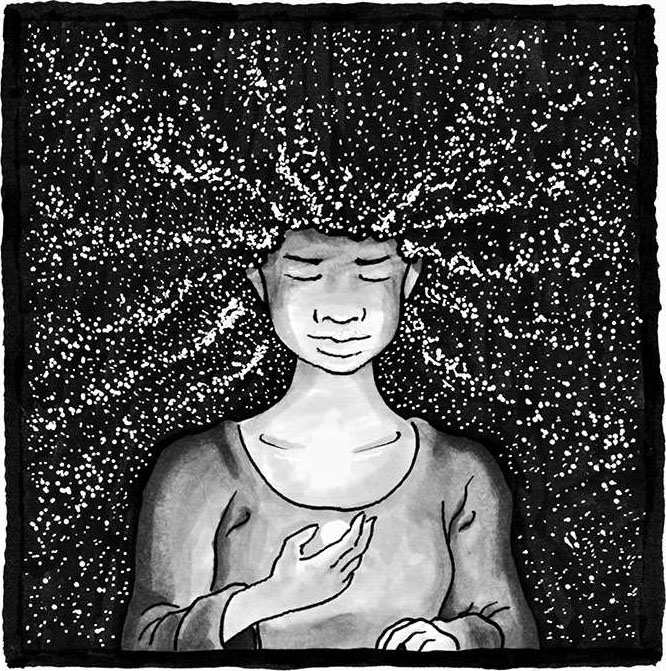
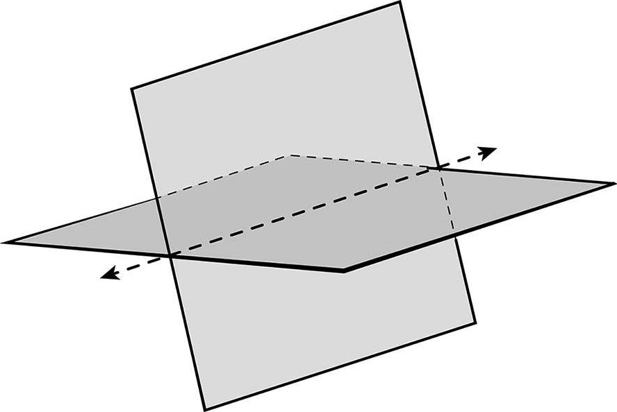

7 真理
真相是什么？
——本丢·彼拉多
（Pontius Pilate）1
如今这个时代，谎言当道，真理难寻。除非我们深爱真理，否则永远也弄不清它是什么。
——布莱兹·帕斯卡2
“我们老师说你是被收养的。我之前居然都不知道。”
我自己也不知道啊。当时我正在读小学六年级，我朋友告诉我这件事以后，我开始认真思考自己到底是不是父母的亲生孩子。小道传闻很容易传遍整个小镇，大家很快就会知道一些连你自己都不知晓的秘密。在此之前，我只是有一点点怀疑。因为我觉得我和家人长得一点儿也不像，家里也没有一张我婴儿时期的照片。有时我甚至觉得事情已经露馅了——我还记得之前有个客人跟我说：“你居然已经长这么大了！我还记得你父母刚领到你时的场景呢……”话还没说完，她脸上就露出了那种不小心说错话的表情。

我朋友的说法好像真有几分道理，因为这的确能解释某些之前根本说不通的事情。我本来可以选择无视传言，假装什么都没发生，就像之前我只是有一点点猜疑时所做的那样。但不知怎的，听到朋友有板有眼地说起这件事，我动摇了。我决定查明真相。
真相，或者说真理，是人类最基本的渴求。哪怕真相有可能会让我们产生不适，我们仍然想得到它。有时我们不愿意遵循这种渴求而行事，但即便如此，这种渴求也会一直盘桓在脑海之中，挥之不去。确认我的确是被收养的之后，即便我明知道找到亲生父母有可能让我知晓某些难以接受的残酷过往，我内心深处还是想要和他们见一面。不过事实上我等了好多年才终于有所行动。有时我们不愿意遵循内心对真相的渴求而行事，具体理由有很多，比如生活过于忙碌或事情难以掌控，我们会告诉自己：“我现在没办法去管这个事。”我们选择生活在一个巨大的泡沫当中——但总有一天它会破灭。届时，我们是否能够从容以对？
在我看来，政治动荡正在让当今世界变得黑白颠倒；在虚假信息的充斥下，人们很容易被煽动挑拨，真相逐渐变得无关紧要。人们宁愿接受和自己世界观相符的赤裸裸的谎言，也不愿接受复杂的真相。人们生活在一个巨大的信息过滤气泡当中，它会自动帮我们屏蔽掉意见相左的东西，让我们在狭隘的偏见中故步自封。气泡之内传播的通常都是彻头彻尾的谎言，有时甚至是恶毒的观点。讽刺的是，那些把谎言当作强兵利器的群体，居然会在无形当中得到敌对群体的帮助，后者迄今为止一直在质疑客观真理的存在。彼拉多的那句反诘“真相是什么？”，彻底表现出了茫然不知所措的群众心中的恼怒。我的朋友们偶尔也会哀叹：“想要弄明白到底发生了什么事也太难了吧！我又何必自寻烦恼呢？”每逢此时，我都能感受到他们和彼拉多一样绝望。
是啊，大家为什么要在意真相呢？如今真相还重要吗？我们真的要盲目信从权威，让他们去决定什么东西真实可信？我们不能自己去辨别真相吗？
真相是人类繁荣的标志。一个繁盛的社会必然重视真相，一个压迫剥削的社会必然会蒙蔽真相。想想那些操纵媒体、愚弄群众的政权吧。政治学家汉娜·阿伦特（Hannah Arendt）因对极权主义的研究而闻名于世。她在 1967 年的文章《真理与政治》中写下了这样一段话：
用谎言去持续地、永久地取代事实真相，其结果不是谎言被信奉为真理，真理被诋毁为谎言，而是我们把控自我、辨别人生方向的能力……会逐渐被摧毁。1
一旦迷失了人生方向，我们就不再那么在意真相，而且很容易被别人操纵。“何必自寻烦恼？”这就是答案。
掌握了数学思维，我们就能抽丝剥茧，弄清楚发生了什么，去“自寻烦恼”。数学探索者们非常注重深层知识和深入探究。
虽然我一直在使用“真相”这个词，但不同的人可能对真相有不同的理解。在此我采用最常见的理解方式：真相就是一段真实可信的、符合现实的陈述。2尽管这个定义回避了一系列哲学问题，比如“什么是‘现实’？”，但本书在讨论真相时并不会涉及这么细节的东西。比如我说“天空是蓝色的”，这段用来形容物理世界的陈述就很容易得到验证。虽然这个真相可能有些主观，因为它取决于观测者怎样理解“蓝色”，但从某种意义上而言这段陈述的确和现实相符。如果非要追根究底的话，我们可以用光波的波长给“蓝色”加上一个更精准的定义。另外，如果我说“我是被领养的”，那么这就是一段历史陈述。尽管它不能像物理事实一样得到验证，但有很多重要证据可以表明它的真实性——如今我已通过多种不同渠道确认了被领养的事实。无论如何，历史真相只能有一个，我要么是被领养的，要么不是。真相建立在事实之上，不管我信不信，它都在那儿。
理解真相的过程中会存在很多复杂之处，我绝没有否认这一点，也没有否认我们对世界的解读会受到主观视角的影响——恰恰相反，我认为我们应该主动接纳真相的复杂性。当初我和亲生父母取得联系时，我不得不面对一个令人感到很不自在的问题：他们当初为什么放弃了我的抚养权？这个问题我问过很多人，每次得到的答案似乎都有一个共通的句式，“你的生母把你交给别人，是因为——”。我不得不通过多个视角来解读这句话，比如别人的视角（他们为什么这么说？），我的视角（听到这些话我自己有什么感受？），以及我亲生母亲的视角（她会做何解释呢？）。这些内容很复杂，而且解读的时候很容易受到主观意识的影响。尽管如此，综合分析之后，我还是把各种细节拼凑在一起，看到了完整的真相。如果我不愿意接纳隐藏在真相背后的那些复杂性，那我永远都看不清事情的全貌。
对数学探索者来说，想要掌握真理，深刻理解是一个必不可少的环节。获得真理和深刻理解真理是两回事。比如说某位数学探索者正在计算 777×1144，她不会仅仅满足于得出一个答案：111888。她早已深刻理解了乘法的含义，可以利用自己的所学来检查答案是否符合逻辑，看看自己在使用计算器的时候是不是按错了某个键。她知道，答案的尾数（8）完全取决于相乘的两个数字的尾数的乘积（7×4 =28），检查之后好像没什么问题。她还知道，既然相乘的两个数字一个大于 700，一个大于 1000，那么答案必然大于 700000。这么一看，答案有问题，肯定是某个环节出现了差错。由此可见，深刻理解知识，意味着你可以检查答案是否符合逻辑。每个人都会犯错，数学探索者也不例外，只不过数学探索者更容易发现错误。[1]就像我们刚才说的那样，获得真理（刚才的例子中，我们得到了一个错误的计算结果）和深刻理解真理（由此我们便可以通过不同方式来检查答案）是两回事。
同样，对于那些较为高深的数学知识，我们必须以更深刻的方式来理解蕴含在其中的真理。正如数学家吉安-卡洛·罗塔（Gian-Carlo Rota）所言：
数学家们常常会在专业性的言论中提到一种非专业性的概念，即蕴含于数学理论当中的“真理”，无论对哪一位数学老师而言，这些真理都是必须向学生传授的重要内容。和物理定律中的真理一样，数学中的这些真理还会涉及理论陈述和真实世界的一致性。所以说，在数学教学过程中，学生需要的东西和教师传授的东西，恰恰就是这种符合事实、贴合现实的真理，而不是那些流于形式的、把证明过程搞得像文字游戏一样的真理。想要成为一名优秀的数学教师，他必须知道如何才能向学生展现这种符合事实、贴合现实的真理光彩照人的一面，同时还要在训练过程中让学生扎扎实实地将这些真理牢记于心。3
如果你没有彻底掌握蕴含于定理中的真理就去摆弄那些证明过程，那你一不小心就会误入歧途。当我试图解开一个自己并不理解的问题时，我常常会一个接一个地列出一大串逻辑证明，但最后的结论总是漏洞百出。证明过程一定有误，可我不知道错在哪里，因为我根本没有掌握蕴藏在这个问题当中的真理。多次经历这种困惑以后，我终于意识到了深刻理解事物的重要性。数学探索者绝不会满足于那些浅层次的知识。
对数学探索者来说，深入探究真理是一种习惯。想要真正理解真理，就必须深入探究真理的不同层面——通过各个不同视角看清真理的全貌。数学探索者追寻真理各种不同的认知方式，不只是为了检验自己的工作成果，更是为了深刻理解各个真理之间的协调与统一。为此，他们会分析大量案例，以便对眼前事物有一个直观的了解；他们会像科学家一样进行各种实验，以便找出证明猜想的证据，或否证猜想的反例；他们还会通过不同方式去证明同一个定理。想要在脑海中对真理形成正确的概念，我们就不得不面临这样一个问题：前面这些工作的成果会不会存在冲突？例如在线性代数的学习过程中，除了要学习各种概念，我们还要练习线性方程组的求解，比如下面这组：
x + 2y + z = 8
3x - y + 5z = 16
求方程组的解，实际上就是找出满足方程条件的x、y、z的具体数值。例如 x = 1， y = 2， z = 3 就是一组解。不过事实上，这组方程还有很多其他的解——它们数量无限，永远都算不完。在数学中，我们称这个方程组有无穷多个解。学习高斯消元法之后，你可以亲自验证这组方程的解的无限性。
不过数学探索者还会寻求其他方式来理解这一真理。比如，可以将方程组整合为一个方程：
x（1，3）+ y（2，-1）+ z（1，5）=（8，16）
由此一来，它就变成了一个几何问题：二维平面的原点（0，0）处有一艘飞船，飞船上装了三个推进器，它们分别可以将你推向（1，3）、（2，-1）、（1，5）的方向。合理开关这三个推进器，你能否将飞船带到（8，16）的位置？我们会发现，任意两个推进器都可以满足题目要求。数学探索者很快就可以意识到解法并不唯一，不过“解法无穷”这一点可能就没有那么一目了然。
接下来，这位数学探索者可能会从另一个不同的角度来分析方程组。例如他可能会想起，这一类线性方程的解集对应着三维空间中的平面，而两个线性方程的解集的交集就是整个线性方程组的解。另一方面，两个平面的交集是一条直线，所以他必然会意识到方程组的解集就是直线，而一条直线上的确会分布着无穷多的点。由此一来，通过不同方式，他成功证实了该方程组的解的无限性。所以说，深入探究和深刻理解这两个过程一定是相辅相成的。

两个平面相交
当深入探究成为一种习惯，数学探索者常常会把真理根植于现实当中，同时还会在思想上将真理拓展开来，试图挖掘出某些新的现实。这些现实可以是柏拉图式的、仅仅存在于理想情况中的思想概念。有时，在数学的某种神秘力量的作用下，那些被挖掘出的全新现实甚至可以揭示出物理世界中某些闻所未闻的现象，令人啧啧称奇。谁又能想到 19 世纪中叶发展起来的线性代数，居然可以在 20 世纪于量子力学和搜索引擎算法中得到惊人应用呢？诺贝尔物理学奖得主尤金·维格纳（Eugene Wigner）用“数学那不可思议的有效性”来解释自然科学，他说：“物理定律的表述可以用数学语言准确恰当地表示，这简直是一种奇迹，是上天赐给我们的礼物，我们既不知道背后的具体原理，也想不通人类怎会如此荣幸。”4
数学家格奥尔格·康托尔（Georg Cantor，1845—1918）因对无限集合的性质的研究而享誉天下。对普通人来说，无限集合好像都一样大——它们可以一直列举下去，没有尽头，除此之外好像也没什么可说的了。而数学探索者会思考这样一个问题：我们有没有办法看出无限集合的“大小”？问题的难点在于，永远算不尽的东西该如何计量大小？康托尔意识到，无限集合其实也可以“计量”，只不过不是用数字，而是用其他集合！你可以试着将两个集合中的元素一一配对，如果配完之后两个集合都没有落单的元素，我们就说这两个集合中的元素存在一一对应的关系。换句话说，两个集合“等势”（cardinality）——这是数学家们用来形容“大小”的一个术语。
康托尔于 1874 年发表了自己的研究成果，这些成果中最令人感到不可思议的一点就是，无限集合有很多种大小——准确来说，它们有无限种大小！不仅如此，按照康托尔的理论我们还会发现，整数集（比如 0，1，2，3，……）和 0 与 1 之间的实数集（可以这样理解实数：它的小数部分要么有限，要么可以无限延展下去，重复不重复都无所谓）并不等势。在 1874 年那个年代，这是一项令人感到不可思议的发现，许多数学家一开始根本无法接受康托尔的理论。在当时人们的眼中，这个和无限数集相关的真理是如此的牵强，如此的脱离现实。不过现如今我们已经证实了康托尔的理论，甚至可以从中推导出一些有趣的结论，比如计算的极限：可以证明，所有计算机程序的集合与整数的集合等势，这意味着必然有某些实数的小数部分无法被计算机程序完整地生成出来！由于早已把深入探究变成了一种学习习惯，数学探索者们经常会在无意中发现一些令人震惊的真理或事实。
不断追寻数学真理背后的深层知识，养成深入探究的习惯，可以帮我们培养很多优秀品格，这些品格在生活中的各个方面都会让我们有所受益。第一个品格就是，无论面对何种真理，只要它足够重要，我们都会产生一种一探究竟的渴望，想要在深入探究的过程中发掘背后的深层知识。
每当因所学太浅而误入歧途时，你都会想要更加深刻地理解事物；每当因深入探究而感到惊喜、愉悦，或是有所发现时，你都会渴望更进一步，继续深入探究任何有价值的东西。
因此，如果你能够站在数学的角度看待问题，那么在看到新奇事件（比如近几年探测到的震惊全球的引力波）时，你就不会只是感慨一句“嗯哼，有点意思”，然后就去忙别的琐事了。与之相反，你的大脑会开始飞速运转，你开始认真思考整个事件，尝试把它和自己学过的知识联系起来。你意识到，高中学到的那些几何结构，在引力面前会发生弯曲：虽然光还是沿着直线前进，但引力可以改变直线的“定义”！你逐渐陷入沉思，想要了解更多内容。你开始想象，宇宙中布满了古老的、由很久很久以前的远古事件引发的引力涟漪，而想要弄清这些远古事件必然会面临大量的数学挑战。你开始由衷地感受到，利用引力波观测宇宙是一件多么不可思议的事情。沿着这个兔子洞[2]走下去可以极大地拓展你的视野，可以让你对宇宙中正在发生的事情有一个更全面的理解。
对深层数学知识的不懈追寻，可以帮助我们养成独立思考的品格。作家肯尼思·伯克（Kenneth Burke）曾经说过，文学是“用来生活的工具”，如果真是这样，那数学就是“用来思考的工具”。5有了数学，你就可以辨明答案是否合理，判断答案是否正确。你再也不会盲目顺从，再也不会轻易相信权威言论。你可以更准确地分辨别人是不是在愚弄你。此外，在数学推理和建立概念的过程中，我们还会养成严谨思考的品格：这是一种妥善消化新思想之后在脑海中形成清晰论证的能力。无论在生活中的哪个领域，这一品格都可以让我们受益。当然，想要学会独立思考，数学并不是唯一途径，但它一定是最好的途径之一。
不断地深入探究数学知识，还可以帮助我们养成仔细、谨慎的品格。在数学中，对于各种陈述、域、界、假设，我们总会仔细量化，确保结论真实可信。受过数学训练之后，我们会明白所有结论都存在一定的应用范围，这有助于我们避免过度总结、过度概括。在数学建模中（利用数学语言描述现实世界的某些问题），我们会给出模型成立的前提条件、应用范围。在统计学中，我们会仔细分辨相关性和因果性的区别。养成这些数学习惯之后，我们在评判他人时难道还会选择一概而论，而不是深思熟虑、力求言辞精准吗？我觉得不会。当然，我们多多少少都会在无意当中产生某些偏见，进而产生某些联想，但受过数学训练之后，我们便可以利用所学知识较为轻易地分辨出隐藏在这种思考方式中的逻辑陷阱。
对数学真理的不懈追寻，也可以帮助我们养成知识谦逊的美好品格。艾萨克·牛顿曾经说过：
我不知道世人会怎样看我。在我自己看来，我不过是一个在海边玩耍的孩子，经常会因为找到了一块美丽异常的贝壳，发现了一颗光滑无瑕的卵石而喜形于色，以至浩瀚的真理之海就在我的面前，我却没有发现。6
牛顿的意思是：我们知道的东西越多，就越能够意识到世界上还有很多我们不知道的东西。这是一种谦逊的姿态。数学探索者经常会关注一些自己并不了解的问题，因为悬而未决的问题明显更有趣。他们也早已习惯于看到自己的猜想接连出错，所以数学探索者会摆正态度，把出错看成是探索过程中的正常现象——事实上，出错反而值得庆祝。只要看看那些数学著作的名字，例如《拓扑学中的反例》《数学分析中的反例》，你就会明白为什么了。承认自己的结论有错，其实是一种必备的学习技能，我一直想让我的学生们明白这一点。勇于承认错误是一种美德。以前，当我在试卷中给出的题目过难时，有些学生会在答案中掺一些瞎编乱造的东西进去，试图拿到更多分数。如今，我干脆直接奖励那些勇于承认自己的推理过程存在缺陷的学生——从试卷上的反馈可以看出，学生们在作答时果然变得更加深思熟虑。
由此可见，数学探索者在探求重要的真理时，需要深刻理解知识，深入探究本质，保持知识谦逊，同时还要根据新信息不断改进自己的观点。他会严谨地思考问题、真诚地面对一切。他知道小心谨慎的重要性，也明白严格区分事物的必要性。他会以精准的方式拥抱真理。
不幸的是，即便拥有了这些品格，我们或许仍旧无法改变自己早已成形的世界观，无法克服自己的确认偏误——一种信息偏好，只愿意承认那些支持我们已有观念的信息——尤其是涉及情感问题或自我认知的时候。那么，当真理变得遥不可及，谎言变得根深蒂固之时，我们该如何保持自己对真理的热爱？我们又为什么要花费时间和精力去辨别事物的真伪，修正自己的观念？
我父亲曾不幸罹患癌症，我们作为家人不可能袖手旁观，让其他人来想办法。我们必须弄清哪些治疗方式最有可能挽救父亲的生命。我们四处征询专家意见，认真梳理每一个相关信息。你看，在生死攸关的紧要时刻，真理对我们来说异常重要。
如果我们不愿深刻理解事物本身，不愿深入探究问题，不愿经历探求真理所必需的那些步骤，会出现什么问题吗？
答案是肯定的。如此一来，你将容易被他人操纵、利用；你不再能够做出明智的决策；在足以改变人类生活方式的新科技面前，你只能变成普通的消费者，无法成为技术的革新者；你将无法正确评判技术的使用方式；你将无法保护自己所爱之人，让他们免受谎言的折磨；你将无法和信仰不同的人正常沟通。
在成为数学探索者的道路上，在深度学习、深入探究每个重要真理的过程中，你会越来越了解这个世界，越来越明白自己存在的意义。你会逐渐发现，之前觉得简单明了的社会问题，其实远比你想象的复杂。
不过，对数学真理的不懈追求可以在我们心中点燃一缕崇高的希望，让我们意识到自己其实有能力弄清真理的来龙去脉，哪怕过程无比棘手，哪怕真理异常复杂——我们也会明白某些事物本质上就是绝对的真理，根本无须赘述——这样一来我们就对真理有了信心，可以更加从容地对抗那些谎话连篇、厚颜无耻的小人。对真理的这种信心，或许是我们在探寻数学真理过程中能够得到的最重要的品格。你对数学世界的探索越多，你对真理就越热爱，对真理的信心就越强。你最终会明白，为了得到真理，哪怕耗费毕生心血也在所不惜。
------维克里拍卖------
博弈论中，在某些数学机制的作用下，人们有时会倾向于说出真话。而博弈论本身其实就是一种以决策为根本的数学模型，它在策略分析方面效果奇佳，在经济学和计算机科学中也有广泛应用。下面就向大家介绍一个相当漂亮的应用案例。
假设你为了卖掉自己的汽车，举办了一场无声拍卖会。拍卖有两个规则：
（1）每位买家把自己的出价写在纸上，放进信封，然后密封起来。
（2）将每位买家的出价汇总，出价最高的人获得汽车购买权，买入价格等于最高出价。
虽然看上去相当合理，但这种无声拍卖方式对卖家（假如你就是卖家）来说存在一定风险。如果汽车的价值很高，但每个买家都觉得只有他自己能够看出这一点，那么他的出价就有可能低于他心中的预期价格。由此一来，最终的成交价格将会变低，卖家会遭受一定损失。
有没有这样一种无声拍卖方式，可以让每位买家的出价刚好等于自己的心理预期价格？
答案是肯定的，这种拍卖方式被称为维克里拍卖。在维克里拍卖中，每位买家出价以后，汽车的购买权归出价最高的买家所有，但买入价格不再是最高出价，而是次高出价！
你能想明白为什么这种拍卖方式可以让人们如实出价吗？换句话说，为什么和出价稍高或出价稍低相比，如实出价反而是一种更好的策略？
谷歌搜索引擎的广告业务就是根据维克里拍卖模式，在“搜索广告”中兜售广告位的。
弗朗西斯先生，您好：
您给我寄的这份草稿……最后一段特别铿锵有力，我从中学到了很多东西。对于数学形式逻辑的学习给了我一种自信，我觉得自己完全可以为接下来的上诉去寻找、建立一份坚实的法律依据（偶然发现的一条信息促使我把精力放在了案件之上）。对真理的信心，往往会促使我们下定决心采取行动。
在读到那些和您的数学理论学习过程相关的段落时，我完全能理解您当时的感受。我自己学习数学概念，努力理解其中的意思时，也有过同样的体验，它成了我不断前进的动力（当然，各种挑战也是一种动力，我很享受“战斗”，很享受拼搏的过程）。
克里斯
2018 年 9 月 5 日
[1] 错误有时会帮助你发现更多东西。777×1144 的正确答案为 888888，是不是很有意思！111888 其实是 777×144 的答案，这也是一个值得注意的算式。为什么会出现这种有趣的答案呢？
[2] 兔子洞一般用来比喻奇幻世界、未知领域的入口。源于举世闻名的《爱丽丝梦游仙境》，故事中爱丽丝掉进兔子洞后进入了仙境。——译者注